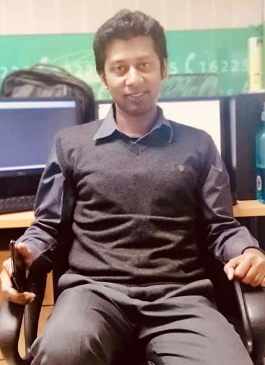

MD. MAMUNUR RASHID

House:518, Road: 1/1
Lais Ali Sarani (2nd Sub-Road of Brac Market)
Shahkabir Mazar Road, Azampur Kacha Bazar
Middle Azampur, Dakshin Khan,-1230, Dhaka 1230
Mobile No: 01784444465
e-mail : antarmamun@gmail.com, antar.mtbl@gmail.com
Career Objective:
To seek the position of a call center manager at a call center which will provide me challenging managerial targets and tremendous growth perspectives and thereby advancing my managerial career.
Employment History:
Total Year of Experience : 10.8 Year(s)
1. Officer & Deputy Dead of Contact Centre (September 20, 2018 - Continuing)
Mercantile Bank Limited
Company Location: Swadesh Tower (8th Floor),
41/6 Purana Paltan, Culvert Road, Dhaka
Department: Card & ADC
Duties/Responsibilities:
- Determines call center operational strategies by conducting needs assessments, performance reviews, capacity planning, and cost/benefit analyses; identifying and evaluating state-of-the-art technologies; defining user requirements; establishing technical specifications, and production, productivity, quality, and customer-service standards; contributing information and analysis to organizational strategic plans and reviews.
- Develops call center systems by developing customer interaction and voice response systems, and voice networks; designing user interfaces; developing and executing user acceptance test plans; planning and controlling implementations.
- Maintains and improves call center operations by monitoring system performance; identifying and resolving problems; preparing and completing action plans; completing system audits and analyses; managing system and process improvement and quality assurance programs; installing upgrades.
- Accomplishes call center human resource objectives by recruiting, selecting, orienting, training, assigning, coaching, counseling, and disciplining employees; administering scheduling systems; communicating job expectations; planning, monitoring, appraising, and reviewing job contributions; planning and reviewing compensation actions; enforcing policies and procedures.
- Meets call center financial objectives by estimating requirements; preparing an annual call center report; scheduling expenditures; analyzing variances; initiating corrective actions.
- Prepares call center performance reports by collecting, analyzing, and summarizing data and trends.
- Maintains equipment by evaluating and installing equipment; developing preventive maintenance programs; calling for repairs; evaluating and implementing upgrades.
- Maintains professional and technical knowledge by tracking emerging trends in call center operations management; attending educational workshops; reviewing professional publications; establishing personal networks; bench marking state-of-the-art practices; participating in professional societies.
- Accomplishes organization goals by accepting ownership for accomplishing new and different requests; exploring opportunities to add value to job accomplishments.
- Answering representative’s questions, guiding them through difficult calls or issues, diffusing angry customers, or handling issues that cannot be fielded by representatives.
- Leading team meetings, asking questions to better understand the calls representatives are receiving, educating and coach workers regarding processes and practices, and explain expectations to employees.
- Assisting other management team members in identifying trends and establishing call center goals.
- Managing the daily running of the Call Centre, including sourcing equipment, effective resource planning and applying Call Centre strategies and operations.
- Ensuring all relevant communications and data are updated and recorded.
- Liaising with supervisors, team leaders, operatives and third parties to gather information and resolve issues.
- Maintaining up-to-date knowledge of industry developments and involvement in networks.
- Monitoring random calls to improve quality, minimize errors and track operative performance.
- Reviewing the performance of staff, identifying training needs and planning training sessions.
2. Assistant Officer ( June 3, 2014 - September 19, 2018)
Mutual Trust Bank Ltd
Company Location : MTB Tower (5th Floor),
111, Kazi Nazrul Islam Avenue, Dhaka-1000
Department: Contact Centre
Duties/Responsibilities:
- Managing the daily running of the call center with effective resource planning and implementing call center strategies and operations.
- Recording statistics, user rates and the performance levels of the center and preparing reports.
- Designing a fruitful Interactive Voice Response (IVR) tree for Contact Centre considering the modern banking concept with the services for General Banking Services, Card Services, NRB Banking Services, SME Banking Services and International Trade Services with Telephonic Personal Identification Number (TPIN) to recognize the customer to take self-service from IVR.
- Introducing Customer Telephonic Information (CTI) screen in Banking Industry by integrating with banking core software and card software to provide one stop service to customer in most cases to give a better customer service experience than the rivals.
- Developing escalation matrix to execute customer request and to resolve problems rise from customer end regarding day-to-day banking needs.
- Preparing “Contact Centre Service Process Manual” to delivering services to customer as of organization policy to ensure customer’s confidentiality.
- Introducing CSE KPI module to evaluate their performance as of services providing to customers.
- Effective management of Inbound/Outbound/Merchant operations.
- Addressing employee attendance, adherence, motivation and cohesiveness.
- Managing Service Level (SL), Abandoned Ratio, Average Speed of Answer (ASA).
- Carrying out needs assessments, performance reviews and analyses.
- Ensure customers’ problems are resolved efficiently and effectively.
- Daily floor Supervision and Monitoring.
- Improves quality results by recommending changes.
- Setting and meeting performance targets for speed, efficiency, sales and quality.
- Ensuring all relevant communications, records and data are updated and recorded
- Advising clients on products and services available.
- Maintaining up-to-date knowledge of industry developments.
- Monitoring random calls to improve quality, minimize errors and track operative performance.
- Handling the most complex customer complaints or inquiries.
- Organizing staffing, including shift patterns and the number of staff required to meet demand.
- Retaining staff with taking Daily Refresher, One to One Session & Counseling
Academic Qualification:
| Exam Title |
Concentration/Major |
Institute |
Result |
Pas.Year |
Duration |
Achievement |
| Master of Science (M.Sc) |
Mathematics |
National University |
First Class |
2004 |
2003-2004 |
1st Class |
| Bachelor of Science (B.Sc) |
Mathematics |
National University |
Second Class |
2003 |
2000-2002 |
2nd Class |
| HSC |
Science |
B N College, Dhaka |
First Division |
1999 |
1998-1999 |
1st Division |
| SSC |
Science |
Sena Palli High School, Dhaka |
First Division |
1997 |
1996-1997 |
1st Division |
Training Summary:
| Training Title |
Topic |
Institute |
Country |
Location |
Year |
Duration |
| Customer Service and Effective Customer Relations |
Customer Service Satisfaction |
Mutual Trust Bank Ltd. |
Bangladesh |
Panthapath,Dhaka |
2017 |
1 Day |
| Cyber Security and Cyber Threats |
Protect Cyber Threats |
Mutual Trust Bank Ltd. |
Bangladesh |
MTB Square, Dhaka |
2017 |
1 Day |
| Fire Fighting and First Aid Treatment |
How to Warn Own self about Fire Fighting and First Aid Treatment |
Mutual Trust Bank Ltd. |
Bangladesh |
MTB Square, Dhaka |
2017 |
Day |
| Money Laundering Prevention and Combating the Financing of Terrorism |
Money Laundering and Prevention and Combating |
Mutual Trust Bank Ltd |
Bangladesh |
MTB Square, Dhaka |
2016 |
3 Days |
| Credit Operations |
Credit Operations in Banking |
Mutual Trust Bank Ltd |
Bangladesh |
MTB Square, Dhaka |
2016 |
5 Days |
| Diploma in Office Application & Networking |
Microsoft Office Application (MS Word;MS Excel,MS Power Point) & Networking |
I-Tech System Limited |
Bangladesh |
Dhanmondi,Dhaka |
1999 |
6 Months |
| Advanced English Spoken |
Advanced Grammatical Learning & Speaking Fluency on English Communications |
Zenith International Limited |
Bangladesh |
Farmgate,Dhaka |
1997 |
3 Months |
Career and Application Information:
Looking For : Top Level Job
Available For : Full Time
Present Salary : Tk. 67,500
Expected Salary : Tk. 75,000
Preferred Job Category : IT/Telecommunication, Customer Support/Call Centre, HR/Org. Development
Preferred District : Dhaka
Personal Details:
Father's Name : Md. Harunur Rashid
Mother's Name : Alo Khandoker
Date of Birth : January 10, 1982
Gender : Male
Marital Status : Unmarried
Nationality : Bangladeshi
National Id No. : 3256666961
Religion : Islam
Permanent Address : House:518, Road: 1/1,Lais Ali Sarani (2nd Sub-Road of Brac Market) Shahkabir Mazar Road, Azampur Kacha Bazar,Middle Azampur, Dakshin Khan,-1230, Dhaka 1230
Current Location : Dhaka